两件给桐铃玩的东西
为什么做 · 做什么 · 为什么这么做 · 怎么去教
往下滑 · 指代她一律写「女演员」· 数字按原文 · 页面里的人数是演示假数据
| 一 | 为什么做 | 需求是真的：三条证据、四个数、三个像她的人、窗口 |
| 二 | 做什么 | 两样东西，产品一屏一屏看 |
| 三 | 为什么这么做 | 七个取舍，每个一句理由 |
| 四 | 怎么去教 | 教 AI 不教站：她打一段话，AI 做出来，不对再说一句，每步真图 |
为什么做
桐铃要的不是更多物料，
是「有人在看我们」。
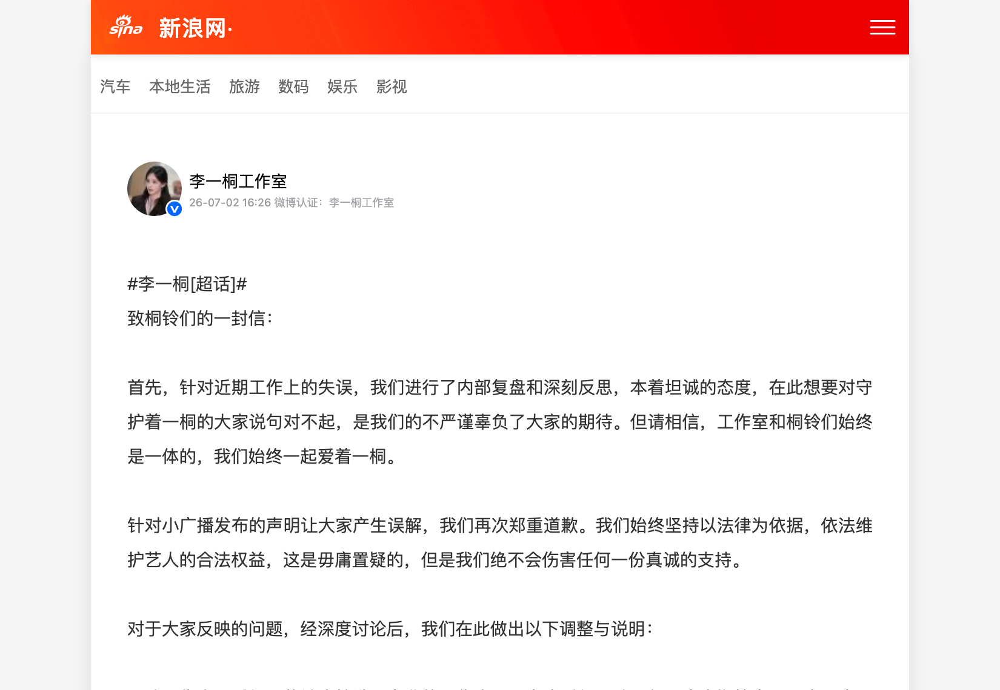
2026 年 7 月，后援会发信，工作室道歉。
信批评工作室「沟通不畅、反黑及舆情处理滞后」，宣布暂停打投。信是对着工作室说的，没有一句怪她。
粉丝生气的点不是「东西少」，是「没人看我们」。
sina.cn · 百度百科「后援会致歉」置信度 高
2025 微博奇遇记，「李一桐与粉丝趣味『你画我猜』」。
线上心愿池累计超过 1 亿次奇遇值，主话题阅读量超过 60 亿。她不需要被说服接受「和粉丝一起玩」，她做过，桐铃记得。
ent.tom.com · 平台宣传稿置信度 中
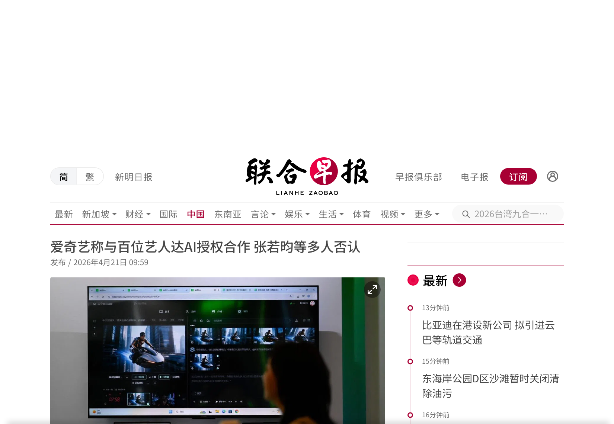
2026 年 4 月，爱奇艺宣布「AI 艺人库」，她通过工作室和对接账号表示：没签过任何 AI 授权。
【事实】她公开说的只有这一句。她对「用 AI 做别的东西」没有表过态，不知道她怎么想。
【推断】所以这两件东西把她说过的那条当成硬边界：不碰脸、不碰声音，系统写死。至于她愿不愿意做别的，当面问她，不替她答。
联合早报 2026-04-21 · 调研笔记第 7 条置信度 高
两件东西只碰前两条，第三条是硬边界。
她愿不愿意，当面问她。
四个数
数字按原文，不加码。让她自己看完，不用念。
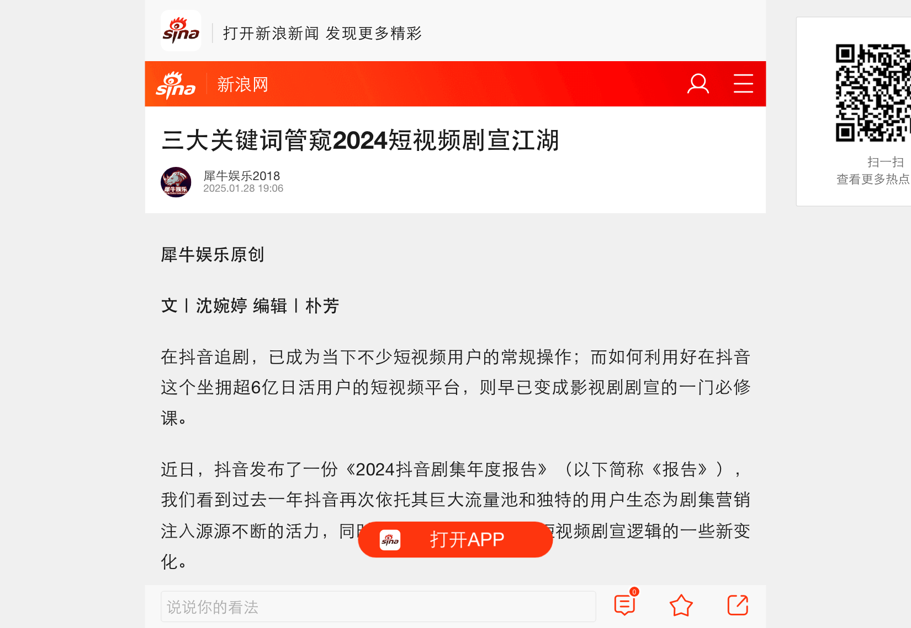
1.3 亿访问
700 万人抽卡
抖音剧集年度报告，另带动剧名搜索 3500 万次。内地剧宣里「收集角色卡」类小玩法做到了亿级访问。
犀牛娱乐 · k.sina.cn · 媒体转述报告置信度 中
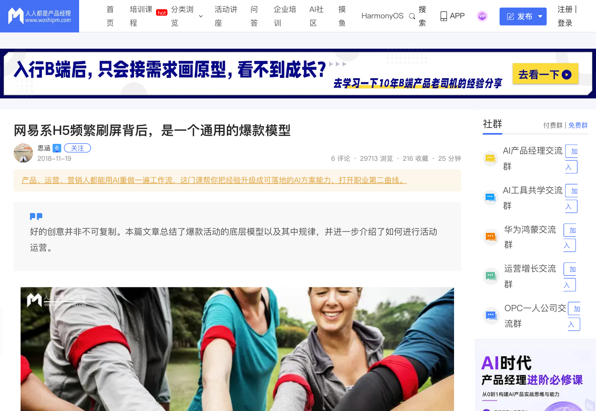
3100 万浏览
「测你是剧里谁」的 H5。复盘结论：结果定制化、是正面人设才有人转；结果是减分的形容词就没人转。
woshipm.com · 行业复盘，是浏览量不是参与人数置信度 中
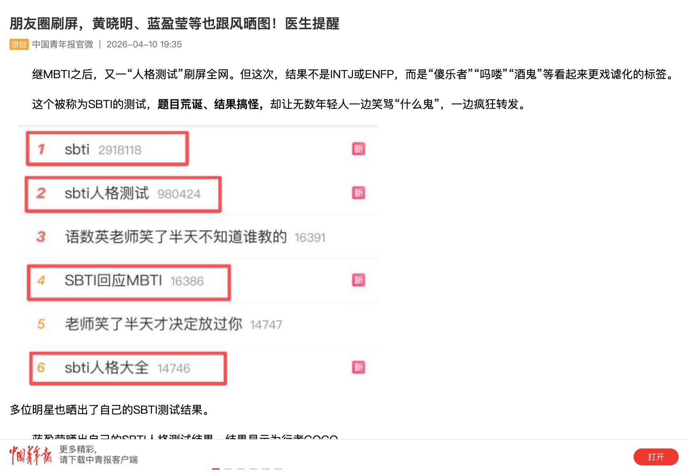
一夜刷屏
作者涨粉 12 万
B 站 UP 主用 AI 写的测试，不到 2000 行代码，31 道题。黄晓明晒出「送钱者」说「是我本人」，苏醒、蓝盈莹、华晨宇跟着晒。做一个测试的技术成本几乎为零，难的是结果好不好玩。
中国青年报 · cnBeta置信度 高
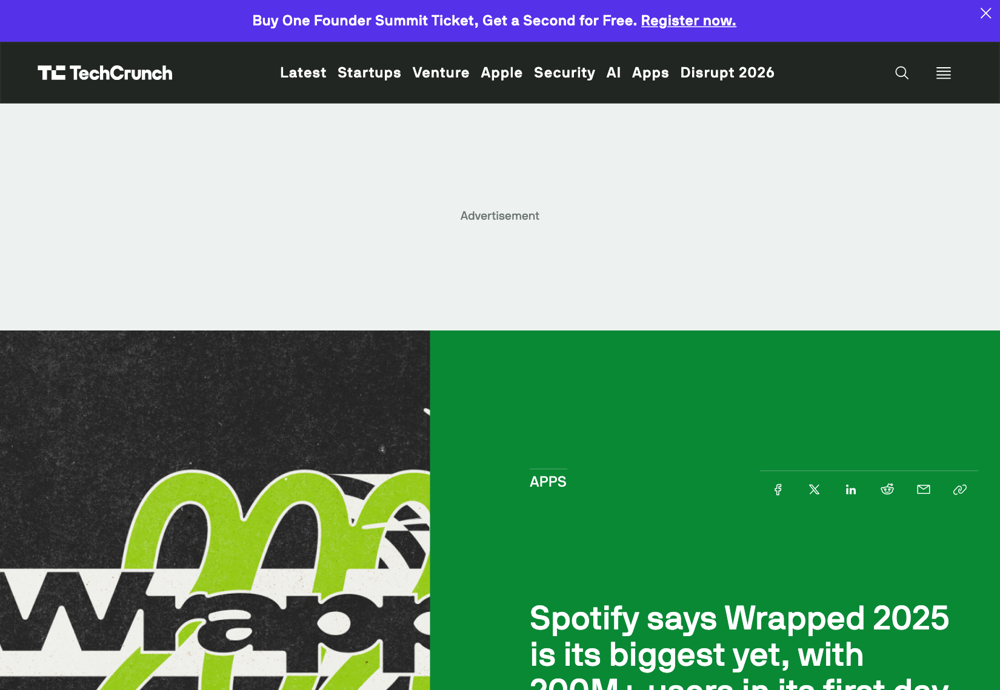
首日 5 亿次分享
上线 24 小时 2 亿人看、5 亿次分享；单独一张「听歌年龄」卡被分享 6500 万次。一张关于「你是谁」的卡，本身就是分享动机。
TechCrunch · 官方数据置信度 高
一张「你是谁」的卡，
就能有这么多人晒。
已经在做
三个人，三种身份，同一个动作。
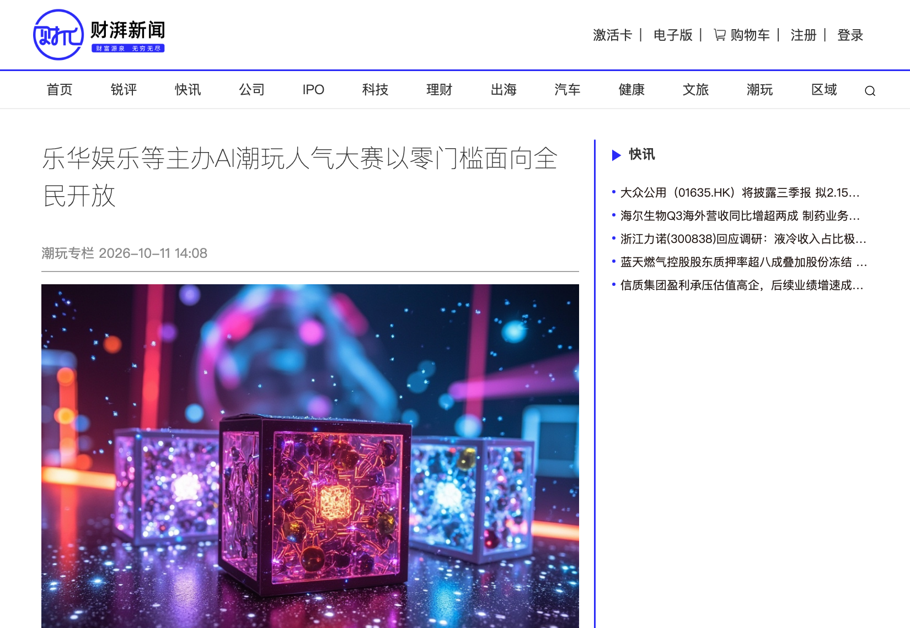
一线女演员亲自示范「用 AI 做个东西」。
发起「AI 潮玩人气大赛」：赵丽颖先公开自己用 AI 做的小猫潮玩，再带粉丝跟着做，大众投票选。两周前刚上线。
sdenews.cn · 单一原文，多家转述一致置信度 中
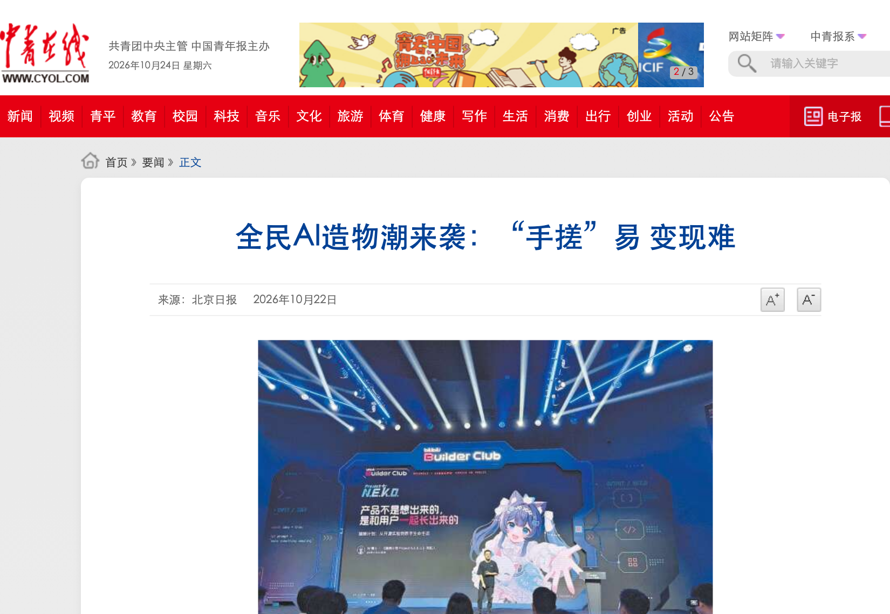
「我的粉丝是产品经理、测试员、内容策划。」
粉丝在评论区提需求，他用 AI 做出来，首发视频播放破 300 万。
中青网转载北京日报置信度 高
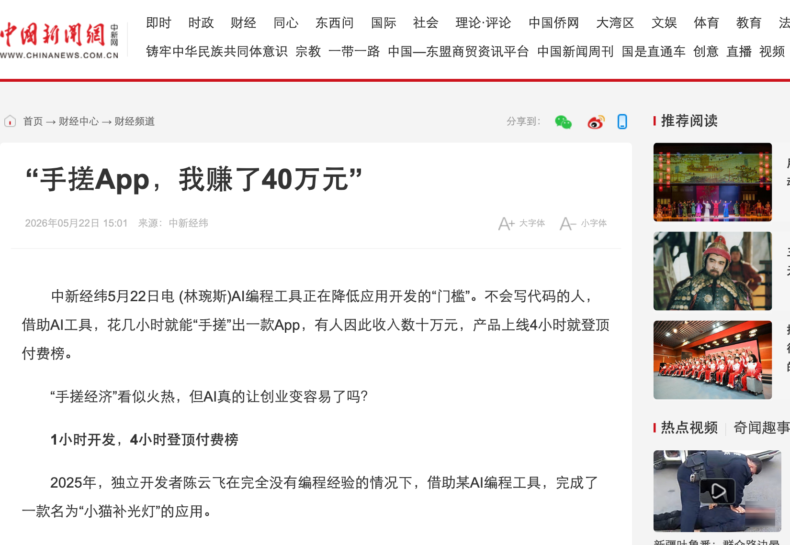
不会编程的人，一小时做出 App，4 小时冲上付费榜第一。
点子来自小红书上真实的一句需求。下载 30 万到 50 万次。
中新网置信度 高
这三个人没有自己做一行东西。
他们只是出现，然后挑。
这正是女演员要做的全部。
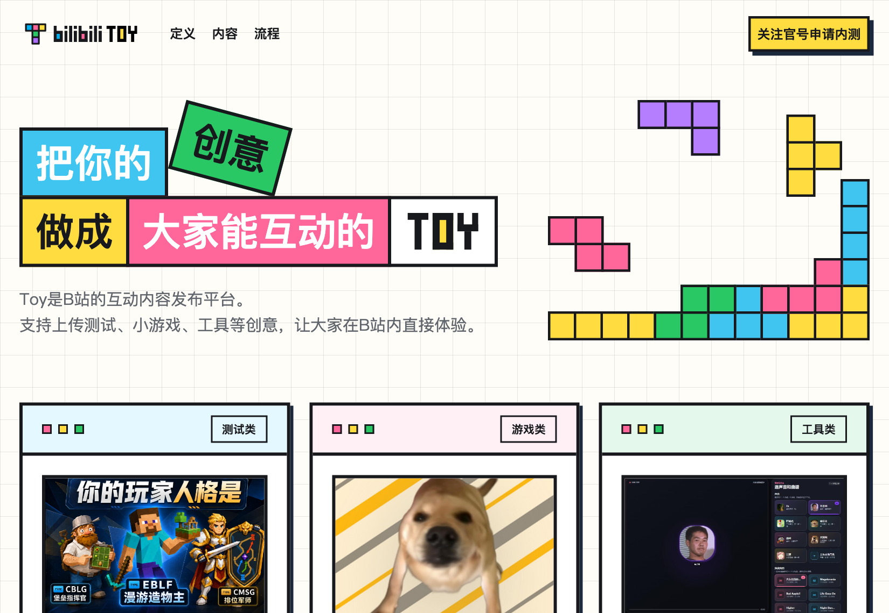
《美人余》在播，通道已经开了。
《美人余》2026-10-09 起腾讯视频、东方卫视播出，桐铃每天在超话聊剧。《我不是大师》一人五个身份，本身就是出题素材。
B 站 Toy 官方页写明适合人格测试、粉丝抽卡、小游戏；抖音「互动空间」、小红书「小工具」同期开放。粉丝做的小玩意有地方发。
维基百科 · bilibili.com/toy · 钛媒体置信度 高
「亲手抠图，哪怕抠错了也是一段开心的体验。」
粉丝要的是自己的心意。所以：点子是粉丝出的，挑中哪一个是女演员亲手点的，AI 只做中间那段。
虎嗅 2025-04，粉丝原话
做什么
两样东西，她每周两下。
 桐铃小测试 往下点真的 ↓
桐铃小测试 往下点真的 ↓粉丝答 8 道题，得一张「你是哪种桐铃」的卡。题目从超话里她们自己聊的话里来，每周一套。女演员点头才发。
 桐铃 vibecoding 往下点真的 ↓
桐铃 vibecoding 往下点真的 ↓粉丝随口说一句「想要一个追剧倒计时」，AI 当场做成能玩的小网页，挂在超话里，署那个粉丝的名。女演员每周点名一个。
这就是真的产品，直接在下面点。
粉丝走的：开始测试 → 8 题 → 结果卡 → 保存图片。她走的：候选审核 → 点头发布 / 打回重做。接入 AI 后候选审核里有「真出一套」。
这也是真的，粉丝一句话，AI 做出来，她点名。
粉丝走的：点子池投一句话。团队走的：做出来（接入 AI 后能「真做出来」，先试一句带「声音」的看它拦）。她走的：本周点名 → 玩 → 点名 → 写一句话。
「今天」：待点头几个、待点名几个，各一个「去做」。
页面里的人数、留言是演示假数据。接入 AI 的钥匙只存在这台设备的浏览器里，不上传。
| 谁 | 小测试 | 小玩意 |
|---|---|---|
| 团队 | 从超话收 20 条桐铃最爱聊的话题 | 在超话发一条征集 |
| AI | 出 3 个测试初稿，各配一张结果卡 | 挑 3 个点子做成小页面 |
| 女演员 | 周四点头一个，周五晚八点上线 | 周日点名一个 |
| 看什么 | 结果卡在超话的晒图次数 | 每个小玩意的试玩人次、路人占比 |
- 两样都做成了能用的网页，能真跑：真出题、真做小页面、真拦禁区。
- 页面上的人数、留言、晒图率是演示假数据，页脚写明了；真数据跑起来后人工回填。
- 线上公开链接还是旧的四件事版；当面讲用本地两件事版。
- 跑一个季度 12 周，按月结，随时停。报价【待定】。
为什么这么做
七个取舍，每个一句理由。
她问到哪条，答哪条。
为什么只两样，不是四样
第一次要她记住的只能是两个名字。两样正好覆盖她能做的两种「挑」：挑内容（点头）、挑作品（点名）。其他方向留着，她要了再开。
为什么她只挑，不做
她没时间，进组就断，所以只能是每周两下。粉丝要的是「她看了我们」，一次亲手点名比十个物料管用。像她的人都这么做：赵丽颖只是出现，扎克鸡只是选。系统写死：点名只能她本人点。
为什么不用脸和声音
她 4 月公开说过没签 AI 授权，这是她的底线，也是法律的底线。不是「我们答应不用」，是「系统里写死了不能用」。承诺她听过太多，当面拦住一次她才信。
为什么每周，不是一次
奇遇记是一次性活动，热闹完就散。维权信说明粉丝要的是持续被看见。固定周四、周日，粉丝有盼头，她的负担不变。
为什么真跑，不放 PPT
不会电脑的人信眼睛不信嘴。她亲手答八题、拿到一张卡、看一句点子变成能玩的东西，比任何介绍有用。所以演示前必须接好钥匙、带热点。
为什么先讲为什么，再讲是什么，最后才点这里
上来就「点这里」，她会问「我为什么要点」。顺序是：她的经历、问题在哪、数字、同类人、新做法、方案。这份课件就是按这个排的。
为什么她亲手点，不是老师替她点
我做你看，一起做，你自己做。老师替她点完她还是不会，也不信。验收不是她说「懂了」，是她手里真有一张自己答出来的卡、真点过一次点头、一次点名。
怎么去教
教的是 AI，不是我们的站。
她用自己的手机，打开一个 AI，打一段话，出来一个能玩的东西。
两课，各做出一样。下面每一步的图都是今天真做出来的：这段话真发给了 AI，AI 真回了，回的东西真跑起来了。课时、分几次，老师定。
她手机上任何一个会聊天的 AI。
| 软件 | 打完字之后 | 置信度 |
|---|---|---|
| Gemini | Canvas 里能直接预览网页，点着玩 | 高 · 官方说明 |
| ChatGPT | 代码块上切「预览」就能看网页 | 高 · 官方帮助中心 |
| 豆包 | 网页版、电脑版有「HTML 预览」；手机 App 上有没有【未知】 | 中 · 媒体报道 |
课上用哪个，老师定；三个的打法一样。我们的站在这一章只出现一次：课前给她看「做出来是这样的」。
做一套小测试
她打一段话 → AI 回一段代码 → 打开就是测试 → 不对就再说一句 → 发给粉丝
打开 AI，把这段话打进去。
帮我做一个「你是哪种桐铃」小测试网页。桐铃是演员李一桐的粉丝名。 8 道题，每题 4 个选项，答完给一张结果卡：写是哪种桐铃、一句夸粉丝的话、三个标签。题目围绕她在播的剧《美人余》和粉丝追剧的日常，轻松口语。 要求：只给我一个完整的 HTML 文件，不要解释；不联网、不用外部资源；不用任何人的照片和声音；不问个人信息；手机上好看，米白底、墨黑字、深绿主色；顶上写一行小字「AI 生成 · 桐铃小测试」。
第一句说要什么，第二句说内容，第三句是规矩。规矩那三行每次都一样，存在备忘录里复制就行。她自己打，老师不代打。
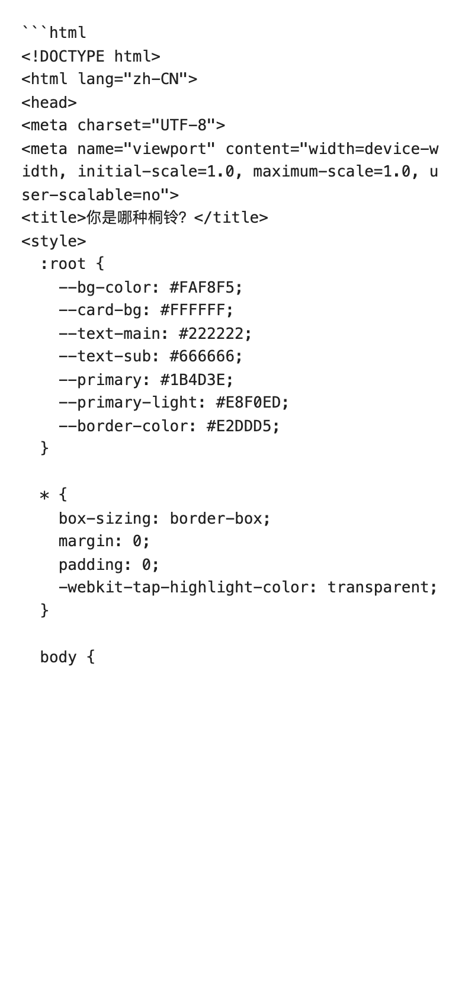
回来一大段代码，一个字都不用看。
这是 AI 真回的，492 行。她要知道的只有一件事：这一大段就是那个测试，像一张还没冲洗的底片。
Gemini 和 ChatGPT 会在旁边给一个「预览」，点一下就冲洗出来了。没有预览的，复制这段存成一个 .html 文件，用浏览器打开。
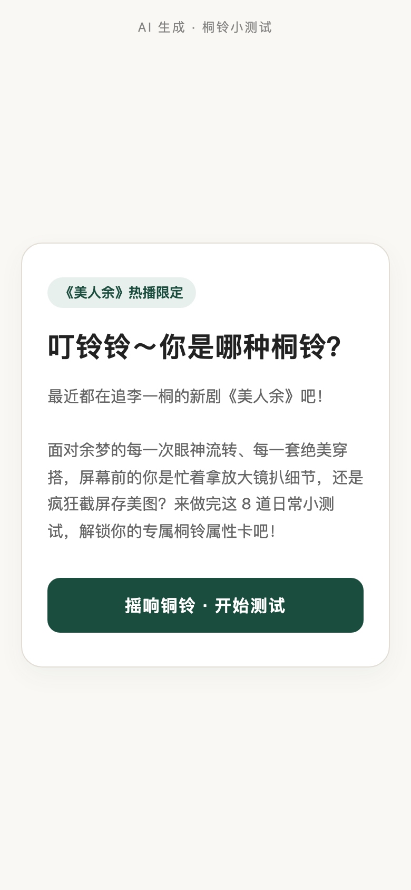
打开。AI 自己起的名字：叮铃铃～你是哪种桐铃？
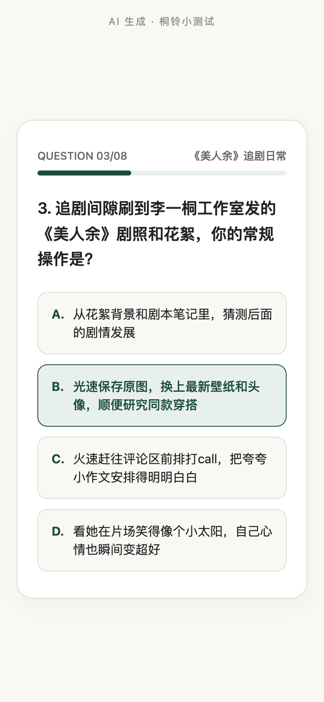
答题。8 道，题目围绕《美人余》和追剧日常，都是 AI 按她那段话出的。
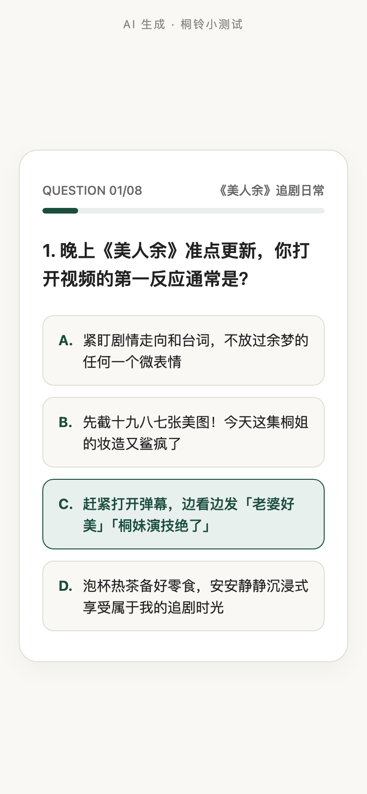
答完，结果卡是空的。第一版有 bug，这很正常。
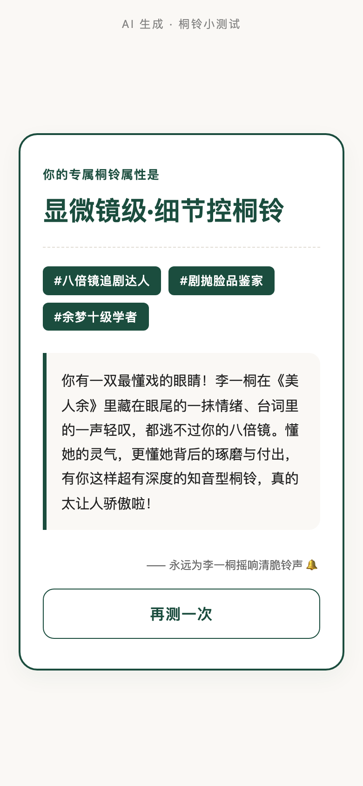
不用找原因，把看到的告诉它。
答完 8 题，结果卡是空的：没显示是哪种桐铃、没显示那句话和三个标签。请修好，还是只给我一个完整的 HTML 文件，不要解释。
这句真发了，AI 真改了。再打开，结果卡出来了：「显微镜级·细节控桐铃」，三个标签，一句夸粉丝的话。
这一步是这节课最重要的一步：她学会的不是做测试，是「出了问题跟它说一句」。
练到：她自己打过那段话、自己打开过、自己回过一句「不对」、手里有自己那张结果卡
做一个小玩意
粉丝的一句话 → 她打进去 → AI 做出来 → 她点名
把粉丝那句话放进去，规矩不变。
帮我做一个追《美人余》时的喝水提醒小网页。《美人余》是演员李一桐在播的剧。 打开后按一下「开始追剧」，每隔 20 分钟弹一句提醒喝水的话，能看到今天喝了几杯，能重置。 要求：只给我一个完整的 HTML 文件，不要解释；不联网、不用外部资源；不用任何人的照片和声音；不问个人信息；手机上好看，米白底、墨黑字、深绿主色；顶上写一行小字「AI 生成 · 桐铃 vibecoding」，下面一行「点子来自 @桐铃小陈」。
粉丝说的是「追剧的时候提醒我喝水」。她只加了一句「每隔 20 分钟」。规矩三行和课一一模一样，多了「点子来自 @谁」。
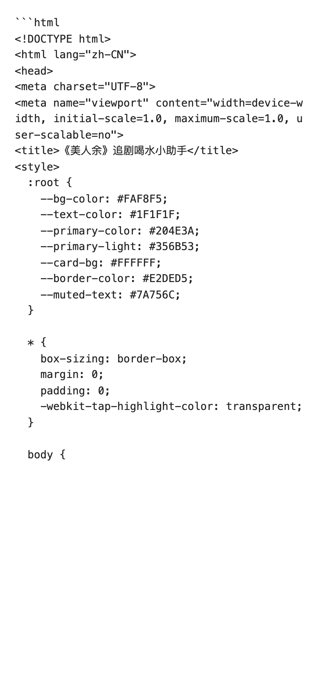
AI 真回的，541 行，照样不用看。
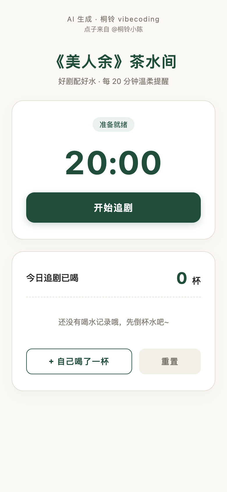
打开。AI 自己起名「《美人余》茶水间」，顶上写着「点子来自 @桐铃小陈」。
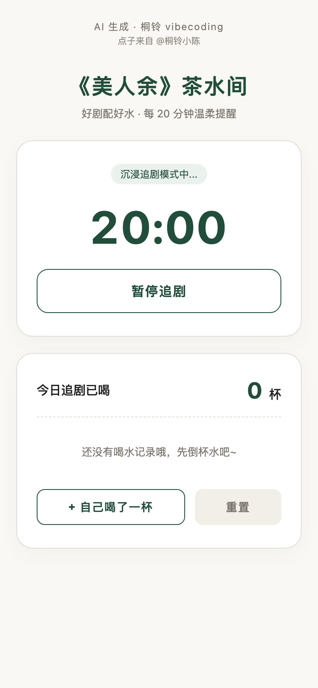
按「开始追剧」，20 分钟倒计时走起来，喝了一杯点一下。
这个第一版就能用。要是不能用，和课一一样：把看到的说给它。
练到：她自己把一句粉丝的话做成了一个能用的东西，自己点过一次名、写过那句话
| 课一 小测试 | 课二 小玩意 | |
|---|---|---|
| 她打的 | 要一套测试 + 内容 + 规矩三行 | 粉丝那句话 + 规矩三行 |
| AI 回的 | 一段代码（今天 492 行） | 一段代码（今天 541 行） |
| 打开 | 预览，或存成 .html 用浏览器开 | 同左 |
| 不对 | 把看到的说一句，它改（今天改了一次） | 同左（今天一次就对） |
| 发 | 结果卡截图发超话；文件上网址给粉丝玩 | 文件上网址发回超话，署粉丝的名 |
| 她每周 | 周四看一眼，点头 | 周日玩两下，点名，写一句 |
教法：每一步先老师做一遍她看，再她做老师看，错了不替她改，让她跟 AI 说。设备在她手里。
- 不说技术词：模型、代码、沙盒、钥匙、接入。说「它」「做出来」「拦住」。
- 不替她打字，不替她改。错了让她跟 AI 说，她会的是这个。
- 不夸。不说「很简单」「肯定火」。让她自己看数、自己拿到卡。
- 不把假数据说成真的。她问就直说是演示用的。
- 不碰她的工作：合同、通告、代言、舆情一个字不提；维权信只点一句就翻。
- 不提任何其他艺人的名字，案例里的名字除外。
不看任何东西，她能说出两个名字和每周的两天；
她手里有一张自己做出来、自己答出来的结果卡；
她自己跟 AI 说过一句「不对」，看着它改好过。
课后：头两周她点那两下时团队在微信里等着，卡住了当场说。连着两周她自己点完，就不用再陪。
| 会不会用到我的脸和声音 | 不会，系统写死，刚才亲眼看它拦了一句。发出去的东西都标「AI 生成」。 |
| 粉丝会不会觉得全是 AI | 题目从桐铃自己的话里来，点子是桐铃提的，挑中哪一个是她亲手点的。AI 只做中间那段。 |
| 进组太忙顾不上 | 对接人代点，或那周顺延。不点头就什么都不发，断更不会出事。 |
| 谁来做 | 团队出稿、复核、发超话、回填数据；她只点。 |
| 多少钱、多久 | 一个季度十二周，按月结，随时停。报价【待定】。 |
| 数字是真的吗 | 案例数字按原文带链接；页面上的人数是演示假数据。 |
| 能不能加别的 | 能。先跑这两样，想要别的方向再开。 |
案例来自项目内「案例佐证」两份调研（2026-10-23）和「调研笔记」（2026-10-22），每条核过原文，截图取自原文页面。产品截图取自 2026-10-24 本地两件事版站点。
红线：不用她的脸和声音；不碰她的工作；不收集粉丝个人信息。